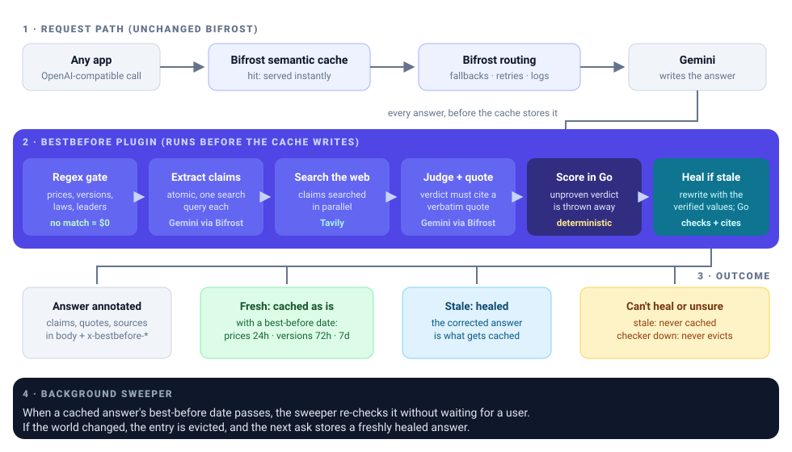
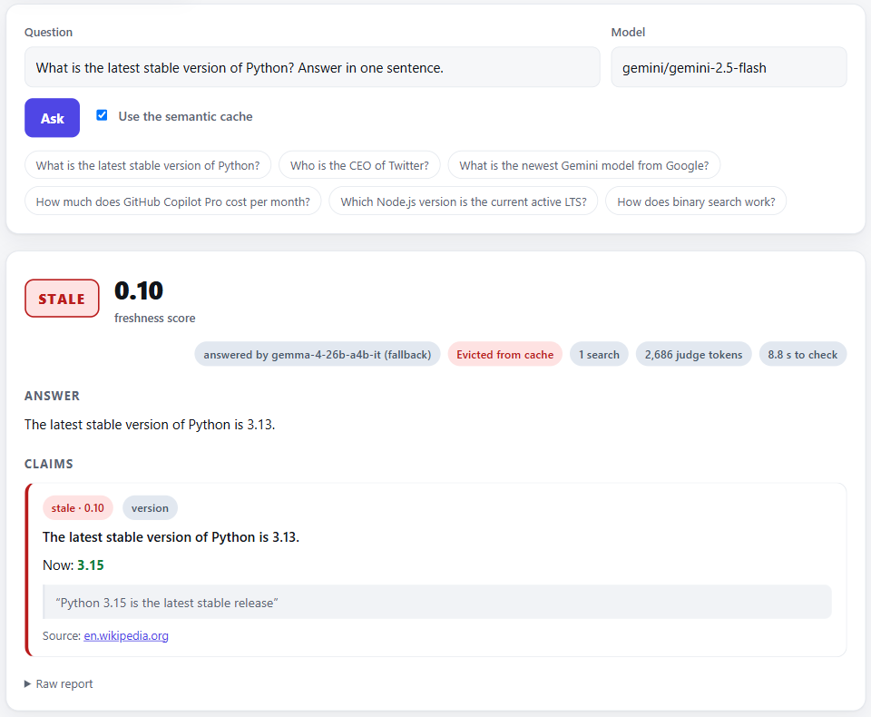
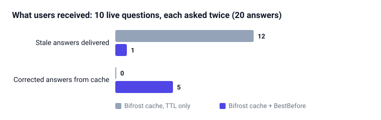
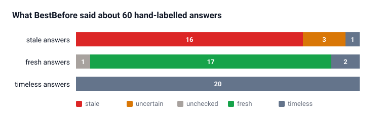
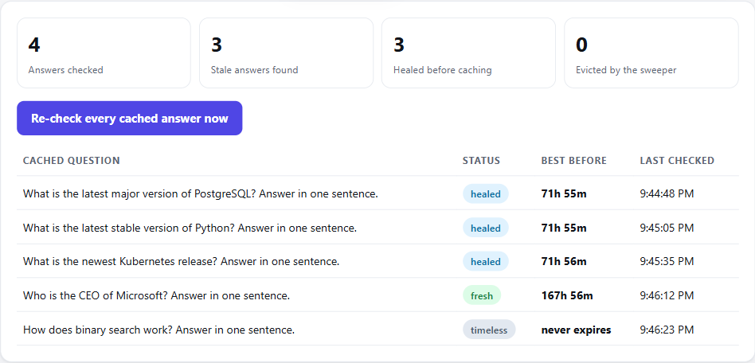

A self-healing semantic cache for Bifrost. Stale AI answers are rewritten with today's verified facts before they are cached, and every cached answer gets a best-before date.
Statement 04 · Open-Source Bifrost Gateway + Statement 06 · Stale-Answer Detector (Tavily)
A gateway's semantic cache then serves that answer to every user who asks again, until the TTL runs out.
In Bifrost today, the clock is the only thing that removes a cached answer: isExpiredEntry checks expires_at and nothing else (plugins/semanticcache/search.go:252), and expired entries are only cleaned up lazily (issue #2414).
Fact-checkers stop at "this looks outdated". The next user still gets the stale answer.


Gemini answered from its training data. BestBefore found the claim, Tavily found Wikipedia, the judge quoted it word for word, and Go accepted the rewrite only because it carries the new value, drops the old one and adds no new words or links.
The corrected answer, with its source, is what Bifrost cached. Asking again: a cache hit with the corrected answer in 1.1 s, no model call.



Prices 24h, versions 72h, leaders and laws 7 days. A background sweeper re-checks answers when their date passes, before any user asks, and evicts them if the world changed. Proven end to end: change a price on the mock web, and the sweeper evicts the cached answer on its own.
Every verdict needs a word-for-word quote from the cited source, and a contradiction must name a new value that is in that quote and not in the claim.
A correction may reuse only words from the answer and the verified values, must drop every old number and may not add links. Go appends the sources itself.
Can't prove or heal it: flagged and never cached. Checker down: nothing evicted. Only cached answers are checked; expired hits are served at once and re-checked in the background.
Three adversarial AI reviews found 35 problems, seven high-severity, including a phishing link that would have been cached. Each is fixed with a test.
| Technology | What it does in BestBefore |
|---|---|
| Bifrost plugin order | PostLLMHook runs before the semantic cache writes, so the cache stores the healed answer; semantic_cache-no_store keeps unhealable stale answers out. |
| Bifrost hooks | See every answer, cache hits and streams included; serve bestbefore/verify, status and sweep inside the OpenAI API. |
| Bifrost cache API | cache_id ties answers to entries; DELETE /api/cache/clear/{id} evicts what went stale. |
| Bifrost routing | Judge and healer calls go back through the gateway: fallbacks across three free Gemini models, retries, logs. |
| Tavily search | Live evidence per claim, plus a second search on the claim's official site (include_domains) that the judge prefers. |
git clone https://github.com/AlgoMasterArpit/HackCulture.git && cd HackCulture cp .env.example .env # add Gemini + Tavily keys docker compose pull gateway && docker compose up -d
Team stackoverflow · github.com/AlgoMasterArpit/HackCulture